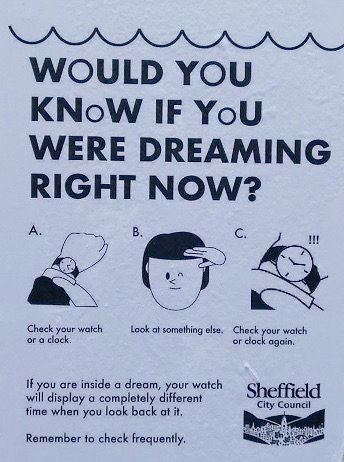

--Jed McKenna
"We all suspend disbelief all the time. Somewhere inside you know that your fast food lunch is more noxious than nutritious. You might as well spread lard on a pack of cigarettes and eat that, but you eat it anyway because, seriously, it's not just lunch that's so damn crazy, it's everything. Where do you draw the line?"
--Jed McKenna
"It’s a dream, questioning itself." --Darryl Bailey
CJ has a nightmare. She thinks it means something.
Something important.
She wants to know what the hidden message is. If only she can get a hold of it.
Because everyone knows dreams are personal. They mean something.
About the me.
Naturally.
And everyone knows that our lives and our obviously necessary understandings about the self can be transformed by decrypting the messages hidden within dreams.
We just need to figure out the secret code.
Much like Q-anon searching for signs of secret meaning in a sentence by putting together every fourth letter so as to make a new sentence. Or like reading tea leaves, or a jigsaw puzzle.
And so many symbols! Representations, illustrations, examples of…
well, something else.
Dream water symbolizes emotions that run deep. Or a threat to drown us. Or life, death, change, or rebirth.
Whichever.
Dream teeth symbolize sexual repression (because what else could teeth mean,) or the desire to be nurtured, or a big moment of transition. (All interpretations shown, courtesy of Google)
Pick one. Hell, pick ‘em all.
The thing is, what needs all these symbols? You’d think if mind has something to say, it would just say it rather than drizzle out all these obscure little hints. What’s the big secret, the scavenger hunt, the hidden code?
What sends these special signs, and why can’t it speak plainly and directly, if it’s got something to point out? If it wants to communicate something, why not just say it?
Conveniently we never know if our guess, our reading of the tea leaves, is correct.
Since clearly we can make anything mean something.
We just need the proper decoder ring.
Oh well, at least the need for imposing order on haphazard chaos gets satisfied.
And yet... what makes us so absolutely positive that dreams are personal at all?
What has us so spellbound that no one considers that everyone might see the exact same things in dreams, or that billions worldwide may have all had similar dreams night after night, for thousands of years?
What makes them ours?
And what requires us to assign meaning about the self, of all things, to a dream?
And then we wake up and go on about our day.
Though once our eyes are open, it’s not as if anything is different.
We commence doing the exact same assignment of meaning to random images and occurrences in the daytime, that we do when asleep at night.
We see a mental image, or a tree, or a body, and think- that image happening in my personal eyeballs- it means something.
"This action means I am unkind. This number means I have failed. That facial expression means I am unloved."
Arbitrarily attaching meanings and causes to random happenings.
We think it, see it, it feels real, so that means it is real.
Awake, asleep- same.
And just like in nighttime fabrications, in the daytime we’re caught up, believing, and completely in it.
In the dream.
Though of course we don't realize.
Because we're part of the dream.
In the illusion, part of the mirage, composed of fantasy.
Not the one dreaming.
So we can’t tell what’s real.
Because dream characters can’t do that.
Which is why all we can do, just for fun,
since we love codes and symbols,
is imagine playing with this same life if it was somehow possible to know, This is a dream.
Imagine playing with, What if I’m a dream. Imagine playing with, What if this isn’t real.
Despite absolute certainty about bodies, chairs, meanings, motivations, or causes.
Despite absolute certainty that it can ever be known what’s real or isn’t,
from inside the dream.
Just playing with what-ifs.
Watching what that might bring.
Nothing real to lose.
And who knows, that might just be
absolutely
eye opening.
Want to watch Judy's Buddha At The Gas Pump interview? click here
"This place is a dream.
Only a sleeper considers it real.
Then death comes like dawn,
and you wake up laughing
at what you thought was your grief.”
--Rumi
"Suddenly, I awoke
Now, I wonder who I am
A man who dreamed he was a butterfly,
or a butterfly dreaming it is a man."--Chuang Tzu
